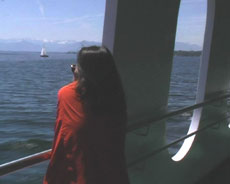

|
CLAIRE ANGELINI
She SEE | D 2007 | 22'
Format: DVD
Originalsprache: Deutsch, Französisch, Vietnamesisch
Während einer Dampferfahrt durch dem Starnberger See, über dem noch immer der alte Mythos von Sissi und Ludwig zu schweben scheint, wird ein vielstimmiges, mehrsprachiges Interview geführt.
Eine hier lebende Vietnamesin, deren Geschichte und Körper im Film nur umrissartig, schattenhaft erscheinen, gibt Auskunft über ihre Geschichte, wie sie vor 20 Jahre aus Vietnam als "boat-people" geflohen ist.
Aus dem komplexen Frage-Antwort Spiel, das mit vier Stimmen und in drei Sprachen geführt wird, kristallisieren sich immer wieder einzelne fragmentarische Momente heraus: Die Geschichte der Frau, die langen Reisen, das zerrissene Land. Gerade diese etwas irrwitzig wirkende Übersetzungskette formuliert im Grunde den Kern der Situation: Es ist die Unbeschreibarkeit der inneren existentielle Leere, die Geschichte eines jeden Flüchtlings in der gegenwärtigen Welt.
Claire Angelini, geb. 1969 in Nizza, Frankreich. Studium an der Ecole Nationale Supérieure des Beaux Arts und am Institut für Kunstgeschichte, Sorbonne, Paris. Von 2003-2004 Gaststudentin an der Hochschule für Fernsehen und Film HFF, München.
Einzelausstellungen (Auswahl): Institut français de Munich, Toutes les îles ne sont pas entourées par la mer, München 2006 | Ortstermine 2004, München (mit Atelier Van Lieshout) | Spiegel/ Lothringer 13, Remix, München 2004| Architekturgalerie, Gegenseitigkeiten, München 2003
Gruppenausstellungen (Auswahl): 54. Kurzfilmfestival Oberhausen 2008 | Museo Nacional Centro de Arte Reina Sofia, Rencontres Internationales Paris-Berlin-Madrid 2008 | Rencontres Internationales Paris-Berlin-Madrid 2007 | 12ème Biennale internationale de l’image contemporaine, Centre Saint-Gervais, Genf 2007 | Spiegel-Videoscreen/ Lothringer 13, Neue Arbeiten, München 2007 | Encuentros internationales de Video arte y Fotografia, Gijon 2006 | Rencontres Oasis / ZKM / 19èmes Instants Video, Marseille 2006 | Spiegel/ Lothringer 13, Videotheka 1, München 2006 | Architekturgalerie, 20 Jahre, München 2004
zurück
|